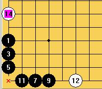
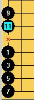

连珠技巧闲言
#1 <font color="red">连珠技巧闲言</font> 作者：刀魂 发表时间：2009-3-24 18:34:45
开局：
连珠开局(正规二十六局)无非星，月两种称法。而究其名称来源，得于黑第三手。黑第三手相对第一手的形决定了开局的名称，而黑第三手相对
于第一手的形无非三种：桂，间，连。所谓桂，也就是小目，或者叫形象地叫做马步也可以，代表局有：峡月，名月，岚月，水月，溪月，残
月，新月，山月等等。间，顾名思义，就是间隔，间断的意思，代表局有：长星，恒星，明星，流星，寒星，书星，金星，瑞星等等。连，就是
连续，连接，代表局有：花月，蒲月，云月，斜月，银月，松月等等。而当初起名的人们为了方便记忆，就把桂和连两种形定义为月，而将间的
形定义为星。按一般情况来说，黑第三手到黑第一手的距离越近，黑的优势就越大，反之，白的优势就越大。
定式：
定式：
定式是个好东西，是前辈们经验的一种累积，是初学者的领航灯。不过有时候定式也不一定完全对，就连著名的连珠中，高级教材《五珠定石》
中都出现过失误之处。随着时间的推移，研究的更深入化，定式也会发生变化。因此，了解定式是必要的，但是要做到知其然，更知其所以然，
因为这样才算是达到了学习定式的真正目地。死记硬背终究不是长久的打算。
中盘：
中盘：
这是一盘棋当中真正考验棋手棋力的地方，连珠的进攻与防守，始终与先手，反先手是分不开的。算路的深浅与周全是决定胜负的要素，要做到
‘静若处子，动若脱兔’。优势时，在没有明确的攻杀路线之前，应当提前算好如何保持先手姿态，一步一步将优势扩大，直至胜券在握，如宝
剑出鞘，不出则已，出必封喉！而劣势时，要争敌之所必要。大劣时不防全力防守，已方在局部的优势可以舍去，此舍车保帅之策。小劣时要伺
机反先，牵制是一种有效的手段。防守时切忌不可含图局部利益！该舍去时就要舍去，这样才在后面有机会反败为胜。如果觉得防守点多，不好
选择，不如从对手的角度去考虑这个棋形，说不定会有意外的发现。
做棋：
当双方进入胶着状态时，做棋就是决定胜负的重要手段。做棋前，请一定先要考虑对方是否有胜！然后，可以考虑已方做棋的连惯性，如果做一
手两，三手就能体现出来的棋，不如去防守对方更有效果。因为你做棋时，对手同样会考虑你做棋的思路，这个时候，就比谁的算路深，你比对
方多算一步，你就多一成胜算，反之，你做的棋也可能将你自已送入坟墓。做得好的就是妙手，反手，就是无理手，恶手，败着。原则上做棋应
该从VCF角度出发，因为连珠当中，冲四是必防一点，三有两点到五点的防点，而VCF是最难的防守，一个普通三步的VCF防点就可以达到十到三
十点之多。因此，做棋尽量往深入，复杂化局面
#2 Re:连珠技巧闲言 作者：兔子哥哥 发表时间：2009-3-25 11:30:09
这里有一个有趣的现象：在棋盘底线上，黑不可能有禁手点存在。 \？？？？？？长连底线上没有\？四四底线上没有|？什么叫在棋盘底线上，黑不可能有禁手点存在\？我汗，棋盘的任何一个点黑都存在禁手\！#3 Re:连珠技巧闲言 作者：兔子哥哥 发表时间：2009-3-25 11:35:52
 #4 Re:连珠技巧闲言 作者：兔子哥哥 发表时间：2009-3-25 11:36:35
这2个算不算底线\？#5 Re:连珠技巧闲言 作者：winf99 发表时间：2009-3-25 14:04:11
楼上的,我觉得:在棋盘底线上，黑不可能有禁手点存在。这句话说的是在实战过程中.而不是摆出来的哦.在实战中底线的禁手抓不到.#6 Re:连珠技巧闲言 作者：刀魂 发表时间：2009-3-25 14:07:34
3 楼的 小朋友 把对手想象成 傻子 了 是吗